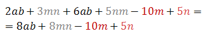
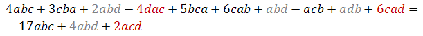
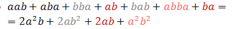
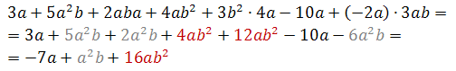

Działania na wyrażeniach algebraicznych
Skoro potrafimy wykonywać operacje arytmetyczne na liczbach, a liczby coraz częściej będą pojawiały się w postaci zmiennych literowych, warto nauczyć się wykonywać działania typu dodawanie, odejmowanie, mnożenie, dzielenie i potęgowanie bezpośrednio na wyrażeniach algebraicznych. Cały temat, choć przydługi i toporny, stanowi konieczny trening przygotowujący do dalszej przygody w świecie matematyki.
Intuicje
Z estetycznego punktu widzenia jednomiany powinno się zapisywać, zaczynając od współczynnika liczbowego, a następnie wypisując kolejne zmienne w kolejności alfabetycznej. Dzięki potęgowaniu możemy uczynić jednomiany jeszcze przejrzystszymi: jeśli pewna zmienna występuje jako czynnik więcej niż jeden raz, nie piszemy jej dwukrotnie, a jedynie zwiększamy jej wykładnik.
Tak więc:
- a∙3∙a∙5∙b∙a∙b∙a^3∙Bracket(-2)∙b^2=-30a^6 b^4
- c/3∙(b^2)/2∙d∙a^3∙6=a^3 b^2 cd
- bogdanma2jajca=2a^4 bcdgj^2 mno
- masło=słoma=ałmos
Na podobnej zasadzie działa mnożenie przez siebie dwóch jednomianów. Wyrażenia 2a^3 bc^2 oraz 3ab^2 c^3 stanowią odrębne jednomiany, ale gdy pomnożymy je przez siebie, 2a^3 bc^2∙3ab^2 c^3 możemy traktować jak jeden jednomian, który wymaga uporządkowania: 2a^3 bc^2 3ab^2 c^3=6a^4 b^3 c^5.
Intuicje
Oznaczmy przez m wagę pojedynczego bochenka chleba. Gdy położymy na wadze elektronicznej dwa bochenki, wskaże ona masę równą 2m. Gdy położymy na wadze jeszcze trzy bochenki, będziemy mieli 5 bochenków ledwo mieszczących się na wadze, która wskaże masę 5m. Stąd prosty wniosek:
2m+3m=5m
Sumując dwa jednomiany, uzyskaliśmy w wyniku inny jednomian. Dodawanie do siebie jednomianów mocno przypomina spostrzeżenia których dokonywaliśmy dawno temu, w temacie o dodawaniu liczb naturalnych:
2 Text(kulki) + 4 Text(kulki) = 6 Text(kulek)
10 Text(owiec) + 7 Text(owiec) = 17 Text(owiec)
3 Text(golonki) + 4 Text(golonki) + 2 Text(golonki) = 9 Text(golonek)
Tak samo, jak intuicyjne jest dodawanie do siebie przedmiotów z naszego otoczenia, tak samo nie ma nic dziwnego w dodawaniu do siebie jednomianów. Jednomiany to „bohaterowie opowiadanej przez nas historii”, każdy z nich ma swój unikalny, odmienny charakter. Współczynniki jednomianów określają liczbę tych bohaterów. Gdy więc dodajemy jednomiany, które mają „ten sam charakter”, po prostu zwiększamy ich ilość.
Jak by nie patrzeć:
4abc+10abc+6abc=20abc
i nie ma absolutnie żadnego znaczenia, co właściwie reprezentują zmienne a, b i c. Mogą one reprezentować Twoje najśmielsze pragnienia.
Jeśli w dwóch jednomianach występują dokładnie te same zmienne (w tej samej potędze), to jednomiany te opisują to samo zjawisko, „mają ten sam charakter” i możemy je do siebie dodać poprzez dodanie ich współczynników. Takie jednomiany nazywamy wyrazami podobnymi. Nie możemy jednak dodawać jednomianów, które mają różne zmienne lub różne wykładniki przy odpowiadających zmiennych. 5 Text(gruszek) + 3 Text(jabłka) to po prostu 5 Text(gruszek) + 3 Text(jabłka), a nie jakieś 8 Text(owoców).
- 
- 
- 
- 
Intuicje
Dodawanie jednomianów i sum algebraicznych jest bardzo łatwe, sprowadza się do zredukowania wyrazów podobnych. Wyrażenie 3a+5ab+2b możemy potraktować jako jedną sumę algebraiczną, a 7ab+5a-b+a^2 jako drugą sumę algebraiczną. Ich dodanie stworzy nową sumę algebraiczną:
Bracket(3a+5ab+2b)+Bracket(7ab+5a-b+a^2 )=
=3a+5ab+2b+7ab+5a-b+a^2=
=8a+12ab+b+a^2
Więcej ostrożności należy poświęcić odejmowaniu wyrażeń algebraicznych. Rozważmy odejmowanie:
Bracket(5a+3a^2+6ab+2b)-Bracket(3a+3a^2+2ab)
Odejmowanie, to zabieranie od tego, co po lewej, tego, co po prawej. Wprowadzamy „lewych” bohaterów na scenę:
A następnie zabijamy ich tylu, ilu zażyczył sobie reżyser „po prawej stronie”:
Nie powinno dziwić, że
Bracket(5a+3a^2+6ab+2b)-Bracket(3a+3a^2+2ab)=2a+4ab+2b
Gdy odejmujemy sumy algebraiczne, właściwie odejmujemy od siebie poszczególne wyrazy podobne. Zastanówmy się nad trochę bardziej abstrakcyjnym przypadkiem:
Bracket(5ab+ab^2+3a)-Bracket(2ab+ab^2+5a+2a^2 b^3)
Tym razem reżyser ma wyraźnie ma zły nastrój, gdyż chce zabić więcej aktorów, niż ma do dyspozycji. Możemy sobie wyobrazić, że obliczenia dotyczą finansów, a jednomiany ab, ab^2, a^2 b^3, a wyrażają pewne kwoty pieniężne. Odejmując od 3a kwotę 5a, stajemy się zadłużeni na 2a, więc jesteśmy na minusie. Tak samo, skoro nie posiadamy żadnych „a^2 b^3”, ale ktoś od nas chce aż 2a^2 b^3, to mamy dług wielkości 2a^2 b^3. Tak więc:
Bracket(5ab+ab^2+3a)-Bracket(2ab+ab^2+5a+2a^2 b^3 )=
=3ab+Bracket(-2a)+Bracket(-2a^2 b^3 )=
=3ab-2a-2a^2 b^3
W ramach obliczeń wygodnie jest myśleć o odejmowaniu sumy jak o odejmowaniu poszczególnych składników:
Bracket(5ab+ab^2+3a)-Bracket(2ab+ab^2+5a+2a^2 b^3 )=
=5ab+ab^2+3a-2ab-ab^2-5a-2a^2 b^3=
=3ab-2a-2a^2 b^3
W ten sposób możemy obliczać jeszcze bardziej skomplikowane różnice:
- Bracket(3a-2b+c)-Bracket(6a+5b-3c)=
=3a-2b+c-6a-5b-Bracket(-3c)=
=3a-2b+c-6a-5b+3c=
=-3a-7b+4c - -Bracket(2a^2 b-3abc-Bracket(-3ab)+abc)-Bracket(-3ab-Bracket(-a^2 b+abc-Bracket(3abc+2ab)))=
=-Bracket(2a^2 b-3abc+3ab+abc)-Bracket(-3ab-Bracket(-a^2 b+abc-3abc-2ab))=
=-2a^2 b+3abc-3ab-abc-Bracket(-3ab+a^2 b-abc+3abc+2ab)=
=-2a^2 b+3abc-3ab-abc+3ab-a^2 b+abc-3abc-2ab=
=-3a^2 b-2ab
Wystarczy trzymać się reguły: minus stojący przed nawiasem odwraca znaki wszystkich składników wewnątrz. Zalecamy wielką ostrożność przy zdejmowaniu nawiasów z minusem. Zabawy z plusami i minusami są jednym z najczęstszych źródeł błędów rachunkowych, niezależnie od poziomu edukacji.
Intuicje
Posłużmy się pewną wizualizacją. Gdy układamy kosteczki w równe rzędy i kolumny, ilość zużytych kosteczek wynosi
Text(ilość rzędów) Text(ilość kolumn)
Jeśli ilość kafli w pionie oznaczymy literką a, zaś ilość kafli w poziomie literką b, będziemy mieli a∙b kafli.
Jeśli w pionie ułożymy a kafli, zaś w poziomie b+c kafli, zużyjemy a∙Bracket(b+c) kafli.
Z drugiej strony, dokonaliśmy podziału tabliczki na dwie części: jedna ma a kafli wysokości i b kafli szerokości (czyli zawiera a∙b kafli), druga ma a kafli wysokości i c kafli szerokości (czyli zawiera a∙c kafli). Okazuje się, że
aBracket(b+c)=ab+ac
Tak więc kiedy mnożymy cały nawias przez jakąś liczbę, mnożymy tak naprawdę każdy z jego składników osobno.
- 2Bracket(a+b)=2a+2b
- 2aBracket(2b+3c)=4ab+6ac
- -3Bracket(4a+5b)=-3∙4a+Bracket(-3)∙5b=-12a-15b
- -2a^2 bBracket(4ab^3+3a^3 b^4-5ab)=-8a^3 b^4-6a^5 b^5+10a^3 b^2
Możemy postąpić jeszcze dalej w tym szaleństwie: skonstruujmy tabelkę, która ma w pionie a+b kafli, zaś w poziomie c+d kafli.
Z jednej strony zużyliśmy Bracket(a+b)∙Bracket(c+d) kafli, z drugiej strony, licząc oddzielnie każdy z czterech obszarów, zużyliśmy a∙c+a∙d+b∙c+b∙d kafli. Tak więc:
Bracket(a+b)Bracket(c+d)=ac+ad+bc+bd
W ogólności, gdy mnożymy przez siebie dwa nawiasy zawierające sumy algebraiczne, mnożymy składniki „każdy z każdym”:
- Bracket(a+b+c)Bracket(a+b)=
=a^2+ab+ba+b^2+ca+cb=
=a^2+2ab+b^2+ac+bc - Bracket(2a-3b)Bracket(3a^2+4ab^3 )=
=2a∙3a^2+2a∙4ab^3-3b∙3a^2-3b∙4ab^3=
=6a^3+8a^2 b^3-9a^2 b-12ab^4 - -Bracket(2a-2b)Bracket(3b^2-6a^2 )=
=-Bracket(2a∙3b^2+2a∙Bracket(-6a^2 )-2b∙3b^2-2b∙Bracket(-6a^2 ))=
-Bracket(6ab^2-12a^3-6b^3+12a^2 b)=
=-6ab^2+12a^3+6b^3-12a^2 b - Bracket(a+b)Bracket(b+c)Bracket(a+c)=
=Bracket(ab+ac+b^2+bc)Bracket(a+c)=
=a^2 b+a^2 c+ab^2+abc+abc+ac^2+b^2 c+bc^2=
=a^2 b+a^2 c+ab^2+b^2 c+ac^2+bc^2+2abc
Intuicje
Podnoszenie do potęgi to nic innego jak wielokrotne mnożenie. Jakkolwiek żmudne i pracochłonne, podpina się pod schemat wymnażania nawiasów:
- Bracket(2a+b)^2=Bracket(2a+b)Bracket(2a+b)=4a^2+2ab+b2a+b^2=4a^2+4ab+b^2
- Bracket(a^2-b)^3=Bracket(a^2-b)Bracket(a^2-b)Bracket(a^2-b)=Bracket(a^4-a^2 b-ba^2-bBracket(-b))Bracket(a^2-b)=
=Bracket(a^4-2a^2 b+b^2 )Bracket(a^2-b)=a^6-2a^4 b+a^2 b^2-ba^4-bBracket(-2a^2 b)-b^3=
=a^6-2a^4 b+a^2 b^2-ba^4+2a^2 b^2-b^3=a^6-3a^4 b+3a^2 b^2-b^3
Ze względu na pracochłonność tych obliczeń, warto pamiętać tzw. wzory skróconego mnożenia, które mówią, w jaki sposób radzić sobie z potęgami w wyrażeniach algebraicznych. Dla drugiej potęgi wyróżniono trzy wzory skróconego mnożenia.
- Kwadrat sumy: Bracket(a+b)^2=a^2+2ab+b^2
- Kwadrat różnicy: Bracket(a-b)^2=a^2-2ab+b^2
- Różnica kwadratów: Bracket(a-b)Bracket(a+b)=a^2-b^2
Na pierwszy rzut oka trudno docenić wkład tych wzorów w nasze życie. Dumna nazwa „wzory skróconego mnożenia” to przecież nic innego niż wyniki kilku prostych rachunków:
- Bracket(a+b)^2=Bracket(a+b)Bracket(a+b)=a^2+ab+ba+b^2=a^2+2ab+b^2
- Bracket(a-b)^2=Bracket(a-b)Bracket(a-b)=a^2-ab-ba-bBracket(-b)=a^2-2ab+b^2
- Bracket(a+b)Bracket(a-b)=a^2-ab+ba-b^2=a^2-b^2
Istotnie, pamiętanie każdego z tych wzorów pozwoli nam oszczędzić aż jednej linijki przekształceń. Miejmy jednak na uwadze, że w tak sformułowanych wzorach litery a oraz b mogą zastępować dowolne wartości liczbowe, w tym także dowolne wyrażenia algebraiczne, nie ważne jak bardzo złożone. Literki a oraz b możemy traktować jak okienka, w które wolno nam wstawić jakiekolwiek jajko-niespodziankę. Możemy więc walić na ślepo:
- Bracket(3a^2 b+5ab)^2=Bracket(3a^2 b)^2+2Bracket(3a^2 b)Bracket(5ab)+Bracket(5ab)^2=9a^4 b^2+30a^3 b^2+25a^2 b^2
- Bracket(1/2 a^2-2b)^2=Bracket(1/2 a^2)^2-2Bracket(1/2 a^2 )Bracket(2b)+Bracket(2b)^2=1/4 a^4-2a^2 b+4b^2
- Bracket(a+b+c)^2=Bracket(a+b)^2+2Bracket(a+b)c+c^2=a^2+2ab+b^2+2ac+2bc+c^2=
=a^2+b^2+c^2+2ab+2ac+2bc
Cyniczniejsi z was wciąż mogą bagatelizować wagę tych wzorów. Dydaktycy jednak wiedzą, co robią, gdy tłuką je do głowy. Gdy będziemy zagłębiać się w coraz bardziej zaawansowaną algebrę, dobra znajomość tych wzorów okaże się bardzo przydatna do uzyskania biegłości w przekształceniach. Zachwalamy te wzory zasadniczo z trzech powodów:
- Pamiętając je, łatwiej podnosić nawiasy do kwadratu (mało istotne);
- Niewłaściwe podnoszenie sum i różnic do kwadratu jest jednym z najczęstszych błędów rachunkowych; wiele osób zapomina o wzorach skróconego mnożenia i wykonuje przekształcenia typu Bracket(a+b)^2=a^2+b^2 lub Bracket(a-b)^2=a^2-b^2 (bardziej istotne);
- Najtrudniejsza jest umiejętność wykorzystania tych wzorów od prawej strony równości do lewej. Niejednokrotnie będziemy musieli np. zauważyć, że a^2-b^2 można przedstawić jako Bracket(a+b)Bracket(a-b). Bez dobrej znajomości wzoru na różnicę kwadratów takie przekształcenie jest bardzo nieoczywiste. Kształtujmy dobre odruchy! (bardzo istotne).
Istnieją podobne „wzory skróconego mnożenia” dla trzeciej potęgi:
- Sześcian sumy: Bracket(a+b)^3=a^3+3a^2 b+3ab^2+b^3
- Sześcian różnicy: Bracket(a-b)^3=a^3-3a^2 b+3ab^2-b^3
- Suma sześcianów: Bracket(a+b)Bracket(a^2-ab+b^2 )=a^3+b^3
- Różnica sześcianów: Bracket(a-b)Bracket(a^2+ab+b^2 )=a^3-b^3
Ich uzasadnienie również jest bardzo proste:
- Bracket(a+b)^3=Bracket(a+b) Bracket(a+b)^2=Bracket(a+b)Bracket(a^2+2ab+b^2 )=
=a^3+2a^2 b+ab^2+ba^2+2ab^2+b^3=a^3+3a^2 b+3ab^2+b^3 - Bracket(a-b)^3=Bracket(a-b) Bracket(a-b)^2=Bracket(a-b)Bracket(a^2-2ab+b^2 )=
=a^3-2a^2 b+ab^2-ba^2-bBracket(-2ab)-b^3= a^3-3a^2 b+3ab^2-b^3 - Bracket(a+b)Bracket(a^2-ab+b^2 )=a^3-a^2 b+ab^2+ba^2-ab^2+b^3=a^3+b^3
- Bracket(a-b)Bracket(a^2+ab+b^2 )=a^3+a^2 b+ab^2-ba^2-ab^2-b^3=a^3-b^3
zaś ich przydatność duża, choć może nie tak duża jak dla drugiej potęgi.
Rozszerzenie
Gdyby bardzo nam zależało, moglibyśmy stworzyć coś w rodzaju „wzorów skróconego mnożenia” dla dowolnie dużych potęg. Zajmijmy się najpierw podnoszeniem sumy do coraz wyższych potęg:
- Bracket(a+b)^1=a+b
- Bracket(a+b)^2=a^2+2ab+b^2
- Bracket(a+b)^3=a^3+3a^2 b+3ab^2+b^3
- Bracket(a+b)^4=a^4+4a^3 b+6a^2 b^2+4ab^3+b^4
- Bracket(a+b)^5=a^5+5a^4 b+10a^3 b^2+10a^2 b^3+5ab^4+b^5
- Bracket(a+b)^6=a^6+6a^5 b+15a^4 b^2+20a^3 b^3+15a^2 b^4+6ab^5+b^6
- Bracket(a+b)^7=a^7+7a^6 b+21a^5 b^2+35a^4 b^3+35a^3 b^4+21a^2 b^5+7ab^6+b^7
Jeśli nie wierzysz w któryś z powyższych wzorów, samodzielnie rozpisz go na kolanie. We wzorach na kolejne potęgi wyłania się twarda tendencja: gdy czytamy wzór od lewej do prawej, w każdym kolejnym jednomianie wykładnik zmiennej a zmniejsza się o 1, a wykładnik zmiennej b zwiększa się o 1. Współczynniki tych jednomianów także są nieprzypadkowe. Zapiszmy w kolejnych linijkach same współczynniki stojące przy kolejnych wyrazach:
Struktura ta, zwana trójkątem Pascala, zachowuje przyjemną właściwość: każda liczba jest sumą dwóch znajdujących się bezpośrednio powyżej. Na brzegach znajdują się jedynki.
Rozpisując w dół trójkąt Pascala, znaleźlibyśmy współczynniki dla coraz dalszych wzorów na potęgę sumy. Chwilowo możemy uznać to za magię matematyki. Czar pryśnie, gdy dotrzemy do tematu „Dwumian Newtona”.
Jeśli chodzi o wzory na potęgę różnicy, wyglądają one tak samo jak wzory na potęgę sumy, tylko co drugi wyraz jest na minusie:
- Bracket(a-b)^1=a-b
- Bracket(a-b)^2=a^2-2ab+b^2
- Bracket(a-b)^3=a^3-3a^2 b+3ab^2-b^3
- Bracket(a-b)^4=a^4-4a^3 b+6a^2 b^2-4ab^3+b^4
- Bracket(a-b)^5=a^5-5a^4 b+10a^3 b^2-10a^2 b^3+5ab^4-b^5
- Bracket(a-b)^6=a^6-6a^5 b+15a^4 b^2-20a^3 b^3+15a^2 b^4-6ab^5+b^6
- Bracket(a-b)^7=a^7-7a^6 b+21a^5 b^2-35a^4 b^3+35a^3 b^4-21a^2 b^5+7ab^6-b^7
Wynika to z dość prostej obserwacji: jeśli we wzorach na potęgę sumy wstawimy wszędzie -b w miejsce b, okaże się, że minus zamieni się na plus przy wszystkich jednomianach, w których wykładnik b jest parzysty; tak więc co drugi wyraz pozostanie ujemny, a co drugi dodatni.
Wzory na różnicę potęg także dają się uogólnić:
- a^2-b^2=Bracket(a-b)Bracket(a+b)
- a^3-b^3=Bracket(a-b)Bracket(a^2+ab+b^2)
- a^4-b^4=Bracket(a-b)Bracket(a^3+a^2 b+ab^2+b^3)
- a^5-b^5=Bracket(a-b)Bracket(a^4+a^3 b+a^2 b^2+ab^3+b^4)
- a^6-b^6=Bracket(a-b)Bracket(a^5+a^4 b+a^3 b^2+a^2 b^3+ab^4+b^5)
- a^7-b^7=Bracket(a-b)Bracket(a^6+a^5 b+a^4 b^2+a^3 b^3+a^2 b^4+ab^5+b^6)
W ogólności:
a^n-b^n=Bracket(a-b)Bracket(a^(n-1)+a^(n-2) b+a^(n-3) b^2+a^(n-4) b^3+⋯+a^2 b^(n-3)+ab^(n-2)+b^(n-1))
Dowód
=a^n+a^(n-1) b+a^(n-2) b^2+a^(n-3) b^3+⋯+a^3 b^(n-3)+a^2 b^(n-2)+ab^(n-1)+
-a^(n-1) b-a^(n-2) b^2-a^(n-3) b^3-a^(n-4) b^4-…-a^2 b^(n-2)-ab^(n-1)-b^n=
=a^n-b^n □
Wzory na sumę potęg dotyczą tylko wykładników nieparzystych:
- a^3+b^3=Bracket(a+b)Bracket(a^2-ab+b^2)
- a^5+b^5=Bracket(a+b)Bracket(a^4-a^3 b+a^2 b^2-ab^3+b^4)
- a^7+b^7=Bracket(a+b)Bracket(a^6-a^5 b+a^4 b^2-a^3 b^3+a^2 b^4-ab^5+b^6)
W ogólności, dla n nieparzystych:
a^n-b^n=Bracket(a+b)Bracket(a^(n-1)-a^(n-2) b+a^(n-3) b^2-a^(n-4) b^3+⋯+a^2 b^(n-3)-ab^(n-2)+b^(n-1))
Dowód
=a^n-a^(n-1) b+a^(n-2) b^2-a^(n-3) b^3+⋯+a^3 b^(n-3)-a^2 b^(n-2)+ab^(n-1)+
a^(n-1) b-a^(n-2) b^2+a^(n-3) b^3-a^(n-4) b^4+⋯+a^2 b^(n-2)-ab^(n-1)+b^n=
=a^n+b^n □
Wzory na sumę potęg parzystych nie istnieją.
Intuicje
Wymnażanie nawiasów pozwala zamienić iloczyn na sumę algebraiczną. Zależnie od sytuacji, jedna z tych dwóch form okaże się bardziej użyteczna: czasem będziemy chcieli przedstawić wyrażenie jako sumę jednomianów, a czasem będziemy pożądali właśnie postaci zawierającej iloczyn kilku sum. Wymnażanie wyrażeń algebraicznych opanowaliśmy już wcześniej:
- 2Bracket(a+b)=2a+2b
- 2Bracket(2b+3c)=4ab+6ac
- -3Bracket(4a+5b)=-12a-15b
Wykonując przekształcenia w drugą stronę, dokonujemy wyłączenia czynnika przed nawias.
- 2a+2b=2Bracket(a+b)
- 4ab+6ac=2aBracket(2b+3c)
- -12a-15b=-3Bracket(4a+5b)
Aby wyłączyć czynnik przed nawias z zadanej sumy algebraicznej, musimy znaleźć czynnik powtarzający się we wszystkich składnikach. Weźmy sumę
12a^2 b+15a^3 b^4 c^5+21a^5 b^3 c
Szukamy zmiennych, które pojawiają się w każdym jednomianie; jeśli dana zmienna występuje w różnych potęgach, wybieramy najmniejszy wykładnik i dolepiamy ją do wyłączanego czynnika. Zmienna a powtarza się w każdym składniku w potęgach a^2, a^3 i a^5; wybieramy najmniejszą potęgę (a^2) i wyłączamy tę cząstkę przed nawias:
a^2 Bracket(12b+15ab^4 c^5+21a^3 b^3 c)
W wyniku tej operacji każdy ze składników w nawiasie jest mniejszy a^2 razy (zmniejszamy wykładnik każdej zmiennej a o 2). Zmienna b pojawia się w kolejnych składnikach jako b, b^4 i b^3; wyłączamy najmniejszą potęgę, czyli b, zmniejszając każdy składnik b-krotnie:
a^2 bBracket(12+15ab^3 c^5+21a^3 b^2 c)
Wyczerpaliśmy powtarzające się zmienne, możemy jeszcze zająć się współczynnikami liczbowymi. Szukamy NWD wszystkich czynników, w tym przypadku NWDBracket(12,15,21)=3, więc możemy wyłączyć trójkę przed nawias.
3a^2 bBracket(4+5ab^3 c^5+7a^3 b^2 c)
Tu nasza misja dobiega końca. Oczywiście
3a^2 bBracket(4+5ab^3 c^5+7a^3 b^2 c)=12a^2 b+15a^3 b^4 c^5+21a^5 b^3 c
ponieważ wyłączanie czynnika nie może zmienić wartości wyrażenia, ma jedynie przedstawić je w innej formie. Dokonaliśmy najpełniejszego wyłączenia przed nawias – nie możemy w żaden sposób wzmocnić czynnika przed nawiasem, aby po wymnożeniu otrzymać wyjściową sumę. Mając wprawne oko, można dokonywać wyłączania czynnika za jednym zamachem:
- 16a^4 b^6 c^3+14a^3 b^7 c^4+18a^2 b^4 c^5=2a^2 b^4 c^3 Bracket(8a^2 b^2+7ab^3 c+9c^2)
- 15ab^10 c^12 de^3-30a^6 b^13 c^3 d^2+75b^4 d^7 e^6=15b^4 dBracket(ab^6c^12e^3-2a^6b^9c^3d+5d^6e^6)
- -2m^3 n^4-4n^4 k^5-8k^5 m^3=-2Bracket(m^3 n^4+2n^4 k^5+4k^5 m^3)
Rozszerzenie
Uogólnieniem wyłączania czynnika przed nawias jest bardziej zaawansowana operacja: rozkład wyrażenia na czynniki. Czasami daną sumę algebraiczną można przedstawić w postaci iloczynu innych sum algebraicznych. Doświadczony matematyk mógłby zauważyć, że sumę
2a^2+7ab+6b^2
można przedstawić jako iloczyn
Bracket(2a+3b)Bracket(a+2b)
W tym przypadku czynnikiem wyłączonym przed nawias nie jest pojedynczy jednomian, ale suma jednomianów. Aby zauważyć takie przekształcenie, trzeba w pamięci wykonać kilka nieoczywistych manewrów:
2a^2+7ab+6b^2=
=2a^2+4ab+3ab+6b^2=
=2aBracket(a+2b)+3bBracket(a+2b)=
Bracket(2a+3b)Bracket(a+2b)
Umiejętność rozbijania skomplikowanych sum na iloczyny jest niesamowicie przydatna m.in. do rozwiązywania równań wielomianowych (temat „Wielomiany”), jednak w praktyce bardzo ciężko wykonywać takie przekształcenia w pamięci.
Intuicje
Dodanie lub odjęcie dwóch ułamków wymaga sprowadzenia ich do wspólnego mianownika. Jeśli w mianownikach pojawiają się wyrażenia algebraiczne, najprościej uzyskać wspólny mianownik poprzez iloczyn wyjściowych mianowników. Gdy dodajemy / odejmujemy dwa ułamki, zawsze możemy rozszerzyć pierwszy ułamek przez mianownik drugiego oraz rozszerzyć drugi ułamek przez mianownik pierwszego:
(a^2)/(3b)+b/(2a)=(a^2∙2a)/(3b∙2a)+(b∙3b)/(2a∙3b)=(2a^3)/(6ab)+(3b^2)/(6ab)=(2a^3+3b^2)/(6ab)
W niektórych przypadkach warto dokonać rozszerzania nieco oszczędniej. Dla ułamków
(3a^2+2b^2)/(ab)-(2a+3b)/b
Rozszerzanie obydwu przez sąsiednie mianowniki nie ma sensu. Wystarczy rozszerzyć drugi ułamek przez a:
(3a^2+2b^2)/(ab)-(2a+3b)/b=(3a^2+2b^2)/(ab)-(Bracket(2a+3b)∙a)/(b∙a)=(3a^2+2b^2)/(ab)-(2a^2+3ab)/(ab)=(3a^2+2b^2-Bracket(2a^2+3ab))/(ab)= (a^2-3ab+2b^2)/(ab)
Gdyby rozszerzyć ułamki bardziej ordynarnie, musielibyśmy później dokonać wyłączenia czynnika przed nawias i skrócenia:
(3a^2+2b^2)/(ab)-(2a+3b)/b=(Bracket(3a^2+2b^2 )∙b)/(ab∙b)-(Bracket(2a+3b)∙ab)/(b∙ab)=(3a^2 b+2b^3)/(ab^2 )-(2a^2 b+3ab^2)/(ab^2 )=
(3a^2 b+2b^3-Bracket(2a^2 b+3ab^2 ))/(ab^2 )=
=(a^2 b-3ab^2+2b^3)/(ab^2 )=(bBracket(a^2-3ab+2b^2 ))/(ab^2 )=(a^2-3ab+2b^2)/(ab)
Ponownie zwracamy uwagę na niebezpieczeństwo odejmowania. Minus stojący przed ułamkiem dotyczy całego ułamka, a nie tylko pierwszego składnika w liczniku:
(3a^2+2b^2)/(ab)-(2a^2+3ab)/(ab)=(3a^2+2b^2-Bracket(2a^2+3ab))/(ab)
(3a^2+2b^2)/(ab)-(2a^2+3ab)/(ab)≠(3a^2+2b^2-2a^2+3ab)/(ab)
Mnożenie i dzielenie ułamków jest stosunkowo bardziej schematyczne. Aby pomnożyć ułamki, mnożymy ich liczniki i mianowniki. Dzielenie to mnożenie przez odwrotność.
- (a^2 c)/(2bd^2 )∙(4cd)/(ba^2 )=(a^2 c∙4cd)/(2bd^2∙ba^2 )=(4a^2 c^2 d)/(2a^2 b^2 d^2 )=(2c^2)/(b^2 d)
- (x+y)/3∙(x-y)/2=(Bracket(x+y)Bracket(x-y))/(3∙2)=(x^2-y^2)/6
- ((a+b)/3+1/a)/(a/b+a/(a+b))=((aBracket(a+b))/(3a)+3/(3a))/((aBracket(a+b))/(bBracket(a+b))+(ab)/(bBracket(a+b)))=
((a^2+ab+3)/(3a))/((a^2+ab+ab)/(ab+b^2 ))=(a^2+ab+3)/(3a)∙(ab+b^2)/(a^2+2ab)=
=(Bracket(a^2+ab+3)Bracket(ab+b^2 ))/(Bracket(3a)Bracket(a^2+2ab)) = (a^3 b+a^2 b^2+a^2 b^2+ab^3+3ab+3b^2)/(3a^3+6a^2 b )=(a^3 b+2a^2 b^2+ab^3+3ab+3b^2)/(3a^3+6a^2 b )